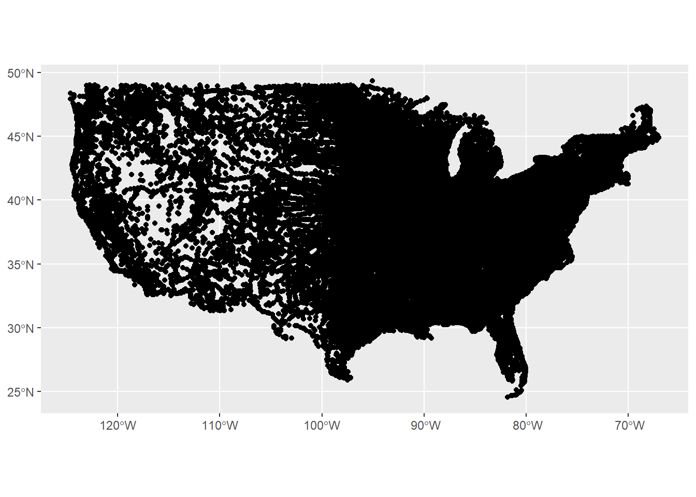
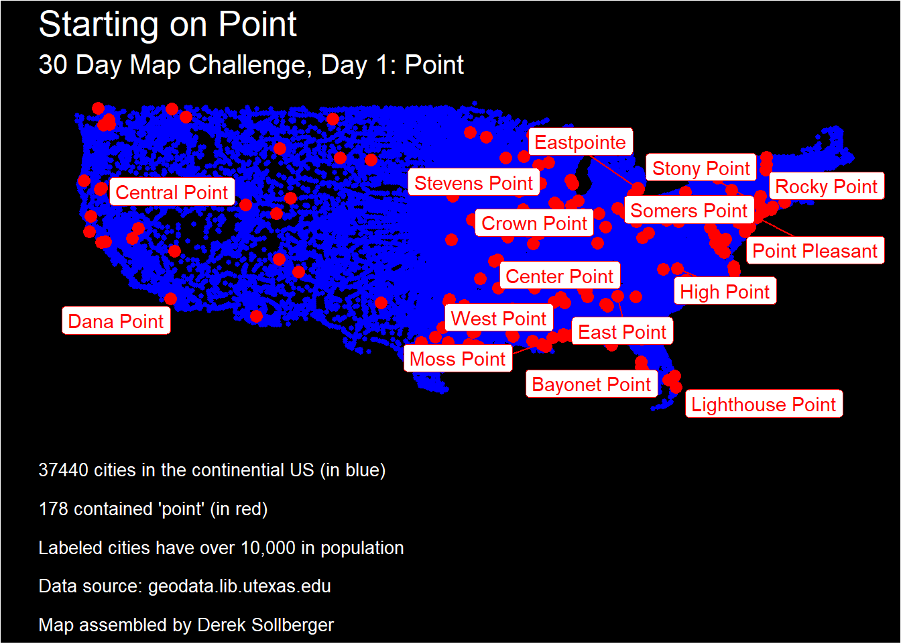

library("ggrepel")
library("patchwork")
library("sf")
library("tidyverse")
knitr::opts_chunk$set(echo = TRUE)30 Day Map Challenge Day 1
# load shape file(s)
us_cities <- st_read("../data/UScities/citiesx010g.shp")Reading layer `citiesx010g' from data source
`C:\Users\freex\Documents\GitHub\30DayMapChallenge\2022\data\UScities\citiesx010g.shp'
using driver `ESRI Shapefile'
Simple feature collection with 38186 features and 16 fields
Geometry type: POINT
Dimension: XY
Bounding box: xmin: -176.6581 ymin: 17.71247 xmax: 178.8775 ymax: 71.29056
Geodetic CRS: NAD83# classify "point" cities
us_cities <- us_cities |>
mutate(on_point = str_detect(NAME, "Point") |
str_detect(NAME, "point")) |>
mutate(on_point_class = ifelse(on_point,
"contains 'point'",
"a different city")) |>
filter(PopPlLat > 20) |>
filter(PopPlLong > -130) |>
filter(PopPlLong < -60)
# subset (useful for labeling later)
point_cities <- us_cities |>
filter(on_point) |>
filter(POP_2010 > 1e4)# make rough map
us_cities |>
ggplot() +
geom_sf()
# make map!
description <- "37440 cities in the continential US (in blue)\n
178 contained 'point' (in red)\n
Labeled cities have over 10,000 in population\n
Data source: geodata.lib.utexas.edu\n
Map assembled by Derek Sollberger"
us_cities |>
ggplot() +
geom_point(aes(x = PopPlLong, y = PopPlLat),
color = "blue", size = 1,
data = us_cities |> filter(!on_point)) +
geom_point(aes(x = PopPlLong, y = PopPlLat),
color = "red", size = 3,
data = us_cities |> filter(on_point)) +
geom_label_repel(aes(x = PopPlLong, y = PopPlLat,
label = NAME),
color = "red",
data = point_cities) +
labs(title = "Starting on Point",
subtitle = "30 Day Map Challenge, Day 1: Point",
caption = description,
x = "", y = "") +
theme(axis.text.x = element_blank(),
axis.text.y = element_blank(),
axis.ticks = element_blank(),
legend.position = "none",
legend.title = element_blank(),
panel.background = element_rect(fill = "black"),
panel.grid.major = element_blank(),
panel.grid.minor = element_blank(),
plot.background = element_rect(fill = "black"),
plot.title = element_text(color = "white", size = 20),
plot.subtitle = element_text(color = "white", size = 15),
plot.caption = element_text(color = "white", hjust = 0, size = 10))Warning: ggrepel: 2 unlabeled data points (too many overlaps). Consider
increasing max.overlaps